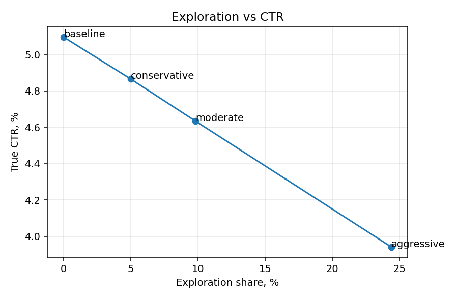
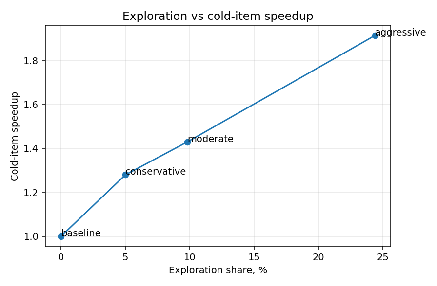
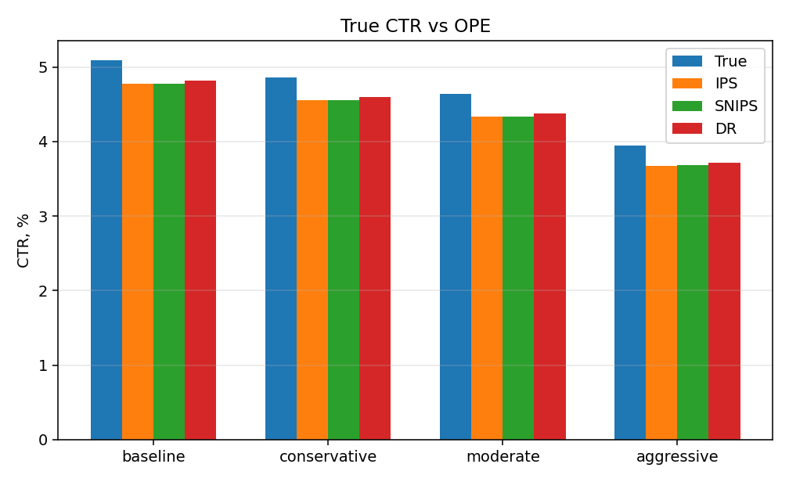

Цифры взяты из прогонов с настройками
configs/baseline.yaml,
configs/conservative.yaml,
configs/moderate.yaml и
configs/aggressive.yaml
(случайное зерно 42, по 5000 показов) и из команды
python experiments/cold_item_experiment.py.
Как запустить проект, написано в README.md.
Рекомендательная система выбирает, какой товар показать человеку. Если всегда показывать то, что уже хорошо себя зарекомендовало, новые товары почти не попадают на экран. По ним нет кликов, модель не учится, и каталог сужается к популярному ядру. Это петля обратной связи.
Чтобы её разорвать, часть показов специально отдают «слабым» или новым товарам. Это и есть исследование (в задании: exploration). Вторая часть задачи: оценить новую стратегию показа по старым логам, не запуская живой эксперимент. Для этого в лог записывают вероятность, с которой система выбрала именно этот товар. По таким логам считают ожидаемую долю кликов (CTR) у другой стратегии. Это офлайн-оценка политик, дальше в тексте: OPE.
Практический сценарий: раскрутка новинок. В симуляторе на 5-й и 10-й день появляются новые товары. Модуль раскрутки поднимает им шанс показа, пока товар молодой или его мало кто видел. Нужно понять, сколько кликов можно потерять, чтобы быстрее набрать статистику по новичкам, и можно ли этой оценке верить.
Четыре части связаны общим форматом решения и файлами настроек.
симулятор → бандит → лог с вероятностью показа → офлайн-оценка → панель
Один прогон симулятора отдаёт логи и «истинный» CTR той стратегии, которую оцениваем. Политики видят только зашумлённую оценку базового ранкера, не настоящий клик.
В рабочих настройках включён простой бандит: с вероятностью 1 − ε он показывает товар с лучшим скором ранкера, с вероятностью ε выбирает случайный товар из доступных. Это ε-greedy. Четыре режима отличаются только долей случайных показов:
| настройка | доля случайных показов ε |
|---|---|
baseline | 0.00 (только лучший скор) |
conservative | 0.05 |
moderate | 0.10 |
aggressive | 0.25 |
У режима без случайных показов нижняя граница ε принудительно 0. Иначе взялся бы минимум 0.01 из общего файла политик, и «жадный» режим всё равно иногда исследовал бы каталог.
Если модуль раскрутки пометил часть товаров как новые, случайные показы идут в основном им, а не по всему каталогу. В лог пишется вероятность выбранного товара. Без этой вероятности офлайн-оценка не считается.
В коде есть ещё два контекстных бандита: LinUCB и Thompson Sampling. Первый исследует за счёт неопределённости линейной модели, второй тянет случайные версии модели и смотрит, какой товар чаще выигрывает. Они тоже пишут настоящую вероятность выбранного товара. Модуль раскрутки через список новых товаров на них почти не влияет, поэтому в таблицах ниже стоит ε-greedy.
Логи пишет отдельная, более случайная политика (ε = 0.5). Так у всех товаров есть шанс попасть в историю. Если логировать слишком узко, оценка новой стратегии становится ненадёжной: мало пересечения между тем, что показывали раньше, и тем, что хотим включить сейчас.
Считаем три оценки ожидаемого CTR. IPS взвешивает клики отношением «как часто товар показала бы новая стратегия» к «как часто его показала старая». SNIPS то же самое, но делит на сумму весов, чтобы оценка не уезжала из-за случайного разброса. DR дополнительно использует модель клика и поправляет её ошибку теми же весами. Слишком большие веса обрезаются (порог 15). Доверительный интервал строится повторными выборками (1000 повторов).
Отдельно смотрим, можно ли числу верить. Ключевая величина: эффективный размер выборки. Если все веса почти равны, он близок к числу показов. Если оценка держится на горстке редких показов, эффективный размер маленький, даже если строк в логе много. Статусы: можно доверять / осторожно / нельзя доверять.
На четырёх режимах (зерно 42, 5000 показов) все прогоны получили статус «можно доверять». Оценки чуть ниже истинного CTR (примерно на 0.2–0.3 процентных пункта), доверительные интервалы истину накрывают.
| режим | истинный CTR | IPS | SNIPS | DR | интервал 95% (DR) | эфф. выборка | доля от N |
|---|---|---|---|---|---|---|---|
| baseline | 5.10% | 4.77% | 4.78% | 4.82% | [3.95%, 5.56%] | 2531 | 50.6% |
| conservative | 4.86% | 4.55% | 4.56% | 4.60% | [3.77%, 5.30%] | 2793 | 55.9% |
| moderate | 4.63% | 4.33% | 4.34% | 4.37% | [3.60%, 5.04%] | 3079 | 61.6% |
| aggressive | 3.94% | 3.68% | 3.68% | 3.71% | [3.06%, 4.29%] | 4021 | 80.4% |
Проверка оценщиков в мире, где истина известна: 12 независимых прогонов, по 2000 показов, зерно 42, ε = 0.10. Смещение около +0.001. Во всех 12 прогонах 95%-интервал накрыл истину.
| оценщик | смещение | разброс | ошибка | доля накрытий |
|---|---|---|---|---|
| IPS | +0.0013 | 0.0197 | 0.0049 | 100% |
| SNIPS | +0.0014 | 0.0192 | 0.0052 | 100% |
| DR | +0.0013 | 0.0193 | 0.0048 | 100% |
В настройках прописана более длинная проверка (50 прогонов по 5000 показов). В этот отчёт она не входила.
Открытый набор показов интернет-магазина ZOZOTOWN
(Open Bandit Dataset,
Saito et al., 2021) в git не входит — путь задаётся в файле настроек.
Прогон сделан на кампании random/all: 1 374 327 показов,
80 товаров, CTR логирующей политики 0.347% (4 768 кликов).
| стратегия | ε | IPS | SNIPS | DR | интервал 95% (DR) | эфф. выборка | доля от N | статус |
|---|---|---|---|---|---|---|---|---|
| conservative | 0.05 | 0.085% | 0.352% | 0.351% | [0.330%, 0.377%] | 9696 | 1.4% | нельзя доверять |
| moderate | 0.10 | 0.102% | 0.351% | 0.351% | [0.329%, 0.377%] | 10763 | 1.6% | нельзя доверять |
| aggressive | 0.25 | 0.153% | 0.350% | 0.350% | [0.328%, 0.376%] | 15294 | 2.2% | нельзя доверять |
На реальных логах оценка получается хуже, чем на синтетике. Причина — очень низкий CTR (0.347%) и слабое пересечение стратегий. IPS почти не работает: максимальный вес достигает 76, из-за чего оценка держится на 10–15 тыс. эффективных показов из 687 тыс. Это видно по колонке «доля от N»: 1–2%. SNIPS и DR дают стабильные числа около 0.35%, но не различают три стратегии: базовая модель клика на 33 признаках не улавливает разницы между товарами при такой доле кликов. Все три оценки помечены как «нельзя доверять» — это ожидаемое поведение и оно согласуется с литературой (Saito et al., 2021).
Сверка с эталонной библиотекой obp в этом окружении не проводилась:
пакет не установлен, тесты сверки пропускаются. Сами формулы проверены
на синтетике (см. предыдущую таблицу).
Настоящая вероятность клика спрятана: это плавная функция от признаков пользователя и товара плюс вкус к категории. Сдвиг подбирается так, чтобы жадная стратегия давала около 5% кликов. В мире 80 товаров, 8 признаков контекста, 4 типа пользователей, 5 категорий. Новинки выходят на 5-й и 10-й день. Товар считается новым, если ему меньше 7 дней или его показали меньше 20 раз. Таким товарам поднимают скор ранкера в два раза. Цель раскрутки: набрать 20 показов на новинку.
Важно не смешивать два числа. Истинный CTR для офлайн-оценки считается для стратегии без подъёма новинок: именно её должен восстановить оценщик по логам. Ускорение и цена в кликах считаются уже с подъёмом новинок (кроме жадного режима, где подъём выключен, поэтому ускорение 1.00x и цена 0). Внутри программы CTR лежит в диапазоне от 0 до 1, в таблицах показан в процентах. Цена указана в процентных пунктах: насколько упала доля кликов относительно жадного режима.
| режим | ε | истинный CTR | цена | показы новинок | показов до 20 | ускорение |
|---|---|---|---|---|---|---|
| baseline | 0.00 | 5.10% | 0.00 п.п. | 0 | 4772.4 | 1.00x |
| conservative | 0.05 | 4.86% | 0.18 п.п. | 415 | 3869.0 | 1.28x |
| moderate | 0.10 | 4.63% | 0.42 п.п. | 485 | 3504.6 | 1.43x |
| aggressive | 0.25 | 3.94% | 1.10 п.п. | 848 | 2684.2 | 1.91x |
Ускорение на этих режимах от 1.28x до 1.91x. Пример «в четыре раза быстрее» из постановки задачи здесь не получился: прогон короткий (5000 показов), товаров всего 80, подъём скора всего в два раза. К концу прогона часть новинок так и не набирает 20 показов, поэтому среднее ускорение скромнее.



pip install -r requirements.txt python -m pytest -q python experiments/run_experiment.py --config configs/moderate.yaml python experiments/cold_item_experiment.py streamlit run dashboard/app.py
Четыре режима: четыре файла настроек. Зерно случайности везде 42. Docker собирается на Python 3.11. Папки с результатами прогонов, скачанным датасетом и виртуальным окружением в git не входят.
conservative
(ε = 0.05). Теряем 0.18 п.п. CTR, новинки набирают статистику в 1.28 раза быстрее.moderate
(ε = 0.10). Теряем 0.42 п.п. CTR, ускорение 1.43x. Это разумный выбор по умолчанию.aggressive
(ε = 0.25). Теряем 1.10 п.п. CTR, ускорение 1.91x.
Ограничения. Офлайн-оценка смотрит на стратегию без подъёма новинок,
а ускорение считается уже с подъёмом. Это разные режимы работы, оба нужны.
Таблицы построены на ε-greedy. LinUCB и Thompson Sampling список новинок
почти не используют. Ускорение нельзя читать как «в проде будет в четыре
раза быстрее». Симулятор с известной вероятностью клика это не живой
магазин. Прогон на Open Bandit Dataset (random/all, 1.37 млн
показов) показал, что при низком CTR и слабой модели клика офлайн-оценка
теряет надёжность (ESS/N падает до 1–2%), а SNIPS/DR перестают различать
стратегии. Это ограничение данных, а не метода: на синтетике те же
оценщики дают смещение около нуля и накрывают истину в 12 из 12 прогонов.
Логи специально пишутся широкой политикой (ε = 0.5), иначе оценка на 80
товарах становится ненадёжной.